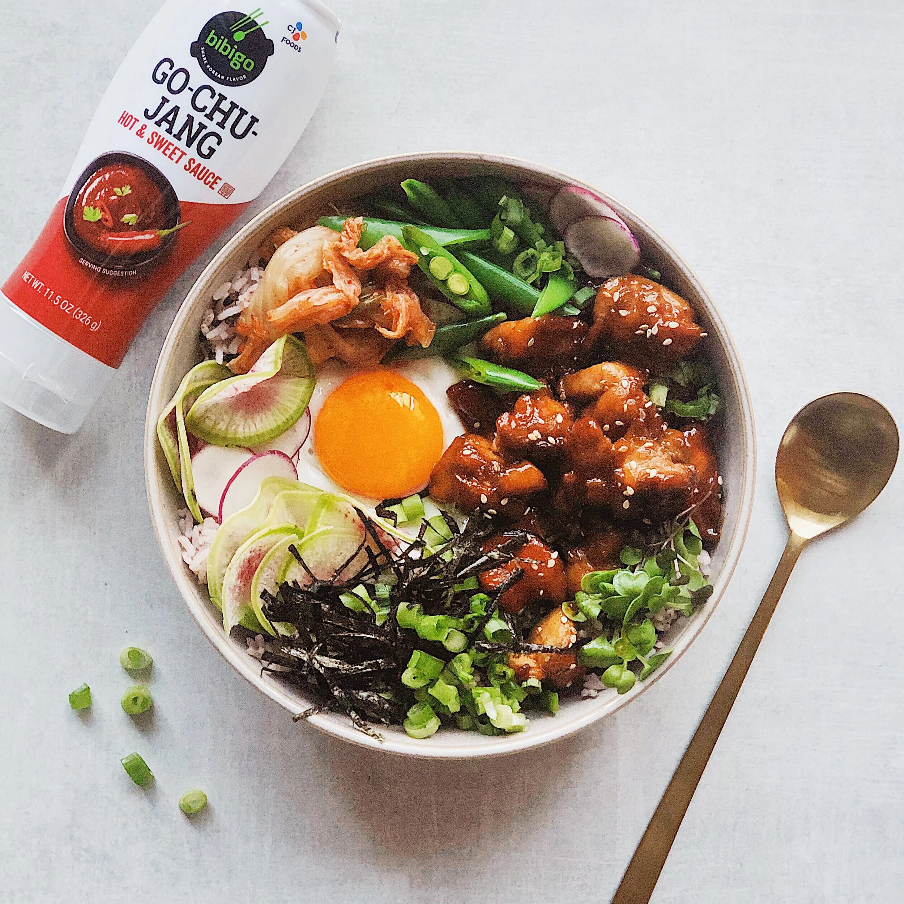

Bibimbap
Back to Homepage

Bimbimbap is a popular korean dish consisting of rice, vegetables, and meat. It is often
served with a fried egg on top and a spicy sauce called gochujang. The dish is known for its vibrant colors and delicious flavors.
Ingredients:
- 1 cup cooked white rice
- 1 cup mixed vegetables (spinach, bean sprouts, carrots, etc.)
- 4 oz seasoned beef or chicken
- 1 fried egg
- 2 tbsp gochujang (spicy sauce)
Instructions:
- Cook the rice according to package instructions.
- Prepare the vegetables by blanching or sautéing them.
- Cook the beef or chicken in a pan until fully cooked.
- Fry an egg to your desired doneness.
- Assemble the bibimbap by placing the rice in a bowl, arranging the vegetables and meat on top, and adding the fried egg.
- Drizzle with gochujang sauce and mix everything together before eating.